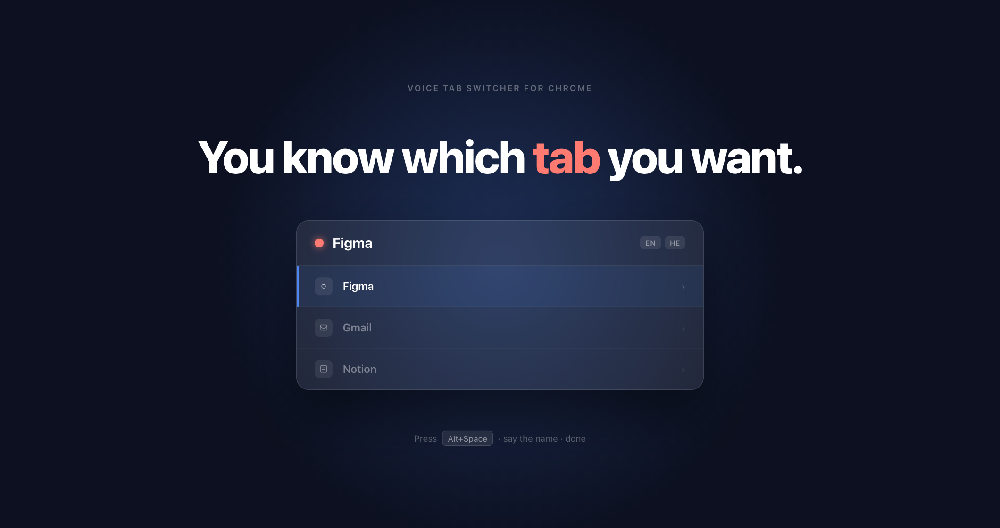
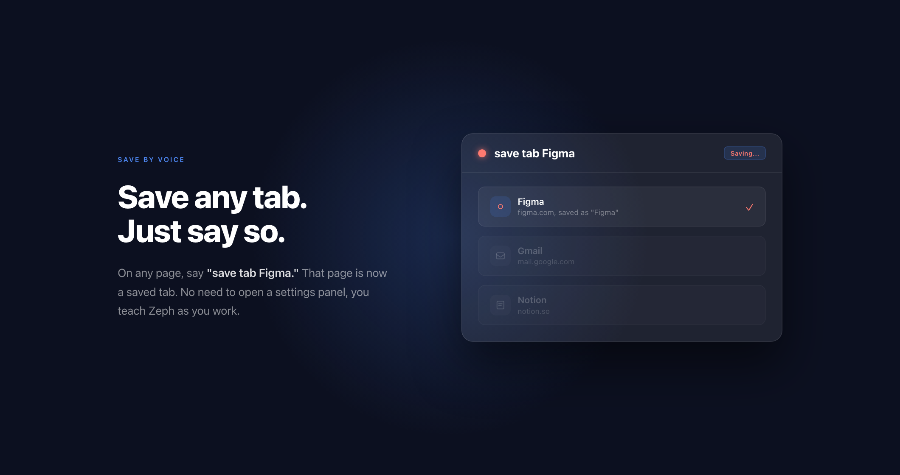
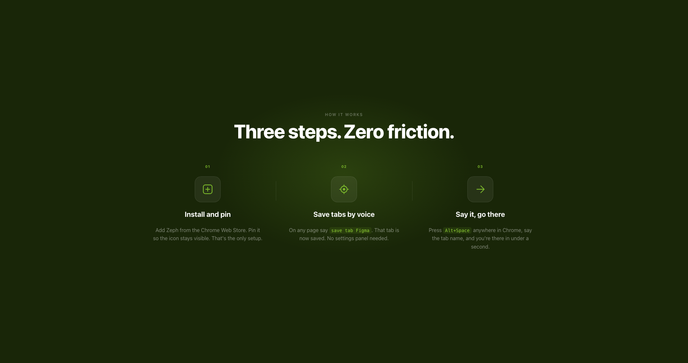
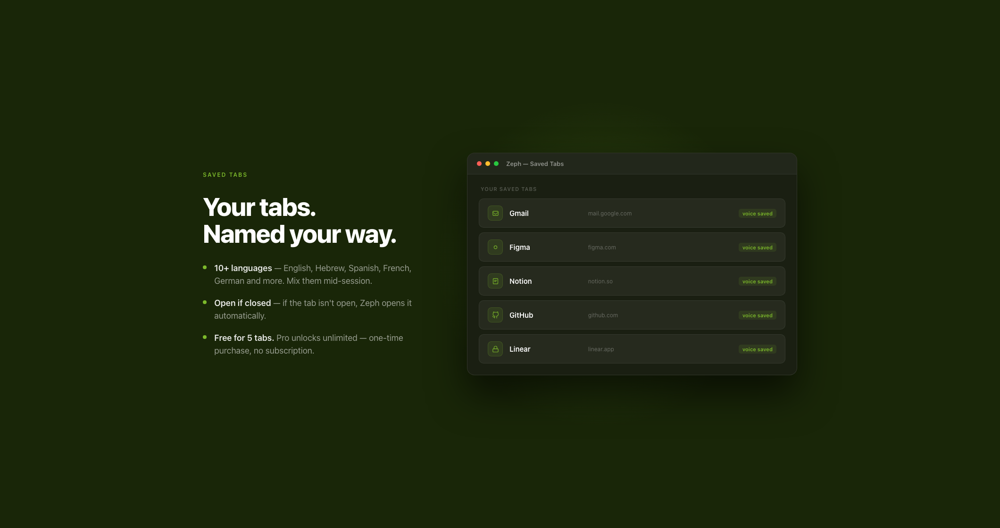

Control bar, four ways
Refined treatments of the prev / pill / next cluster. All live - click to try.
01
Unified Capsule
everything inside one frosted-light pill




02
Ghost Minimal
dark glass buttons, no container
03
Segmented Track
dots become a progress rail
04
Split Edge
arrows hug the sides, pill floats center